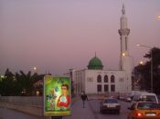

Projecten
Overig
Verslagen Midden-Oosten en Noord-Afrika (MOCANA)

Op deze pagina vind je verslagen van vrijwilligers die naar het Midden-Oosten of Noord-Afrika zijn geweest. Bouwen aan een school, olijven plukken, of leren over de situatie van Palestijnse vluchtelingen in Syrie. Dit zijn enkele voorbeelden van bezigheden van de vrijwilligers. Lees hier over hun verwachtingen, ervaringen, teleurstellingen, nieuwe indrukken, etc.
Wil je zelf een project doen in het Midden-Oosten of Noord-Afrika? Lees dan eerst de criteria.
Mixing work with pleasure in Morocco
Mixing work with pleasure in Morocco
At the beginning of the year, we of the Mocana (Middle East, Central Asia and Morocco) group within VIA had this problem at our hands. Our database was once again filling up with projects in Morocco that looked very nice on paper, but none of us actually knew anyone who’d been to one of them. So how to advise people on going there? Like all good solutions, the one that group-member Laura instantly came up with was surprisingly simple and attractive. “Why don’t we just go there?”, is what she said.BDS Recommendation ICM
Recommendation to join the Boycott, Divestment and Sanctions campaign (BDS campaign)
Proposed by SCI Catalunya
We recommend to all the branches and recognized groups of SCI to actively promote and take part in the Boycott, Divestment and Sanctions (BDS) campaign of the Palestinian civil society in order to react in a non violent way against the apartheid and occupation policy of the State of Israel. We consider this civic campaign as a means to change situations of injustice and institutional violence and to move towards a more just and peaceful situation.
Project: Chantier internationale de Nefta (Tozeur), Tunesië
Het project waaraan ik heb deelgenomen samen met nog vijftien mensen uit verschillende landen (Canada, Frankrijk, Spanje en Tunesië), heeft twee doeleinden allereerst de bescherming van dit stuk van de oase tegen de dreigende verwoestijning, d.m.v. het oprichten van ‘barricades’. Ten tweede staat de culturele uitwisseling centraal. Het kamp wordt jaarlijks georganiseerd door de Tunesische vrijwilligersorganisatie ATAV (Association Tunisienne d’Action Volontaire) in samenwerking met plaatselijk groeperingen die zich bezighouden met het millieu en lokale ontwikkeling. De lokatie waar dit plaatsvindt: Nefta.
Read more: Project: Chantier internationale de Nefta (Tozeur), Tunesië
Project: ICH Jordanië-Al Zarqua
Binnen het werkkamp waren de bezigheden gericht op het schilderen van een school en kindertehuis. Hierbij ging het dan bijvoorbeeld om de muur rondom het schoolplein/voetbalveld, de belijning van het voetbalveld, het ijzeren raamwerk voor de ramen en een lokaaltje in de school. Naast het schilderen was er weinig ruimte voor contact met de kinderen omdat de kinderen op de momenten dat wij schilderden op school zaten en dus voornamelijk lessen volgden.Werken bij 45 graden in Tunesie - 2007
Christi deed een werkkamp in Tunesie. Als je in Noord-Afrika een project wilt doen, is het verplicht dat je Frans spreekt. In haar verslag vertelt ze hoe er veel gelachen is en ook gewerkt en gerelaxed. Maar dat ze ook blij was dat ze Arabisch sprak.